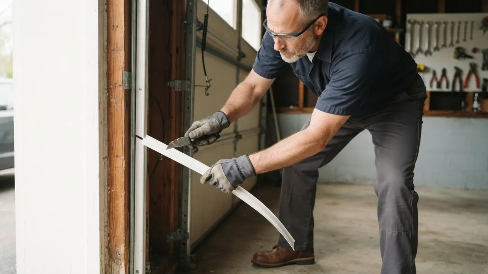
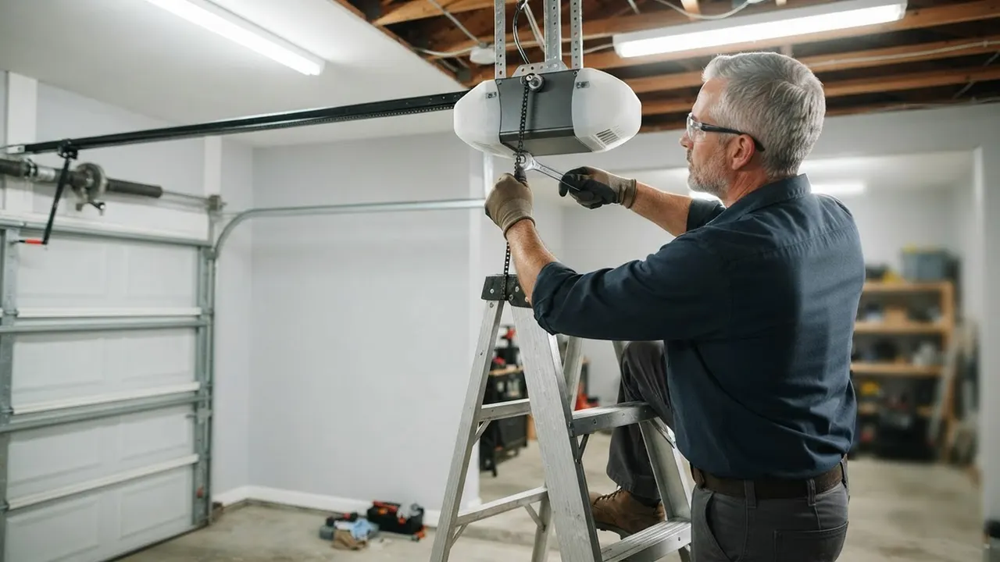
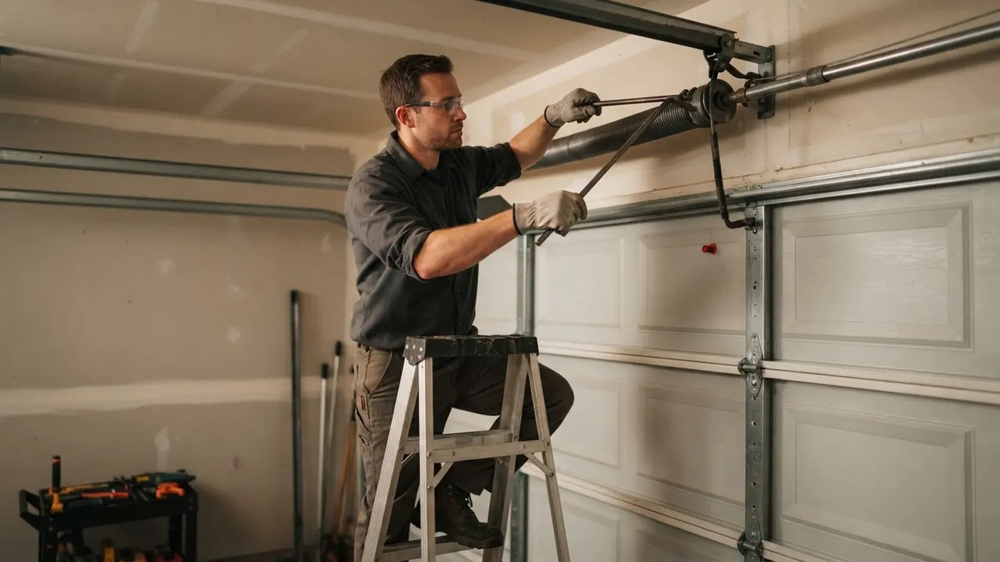
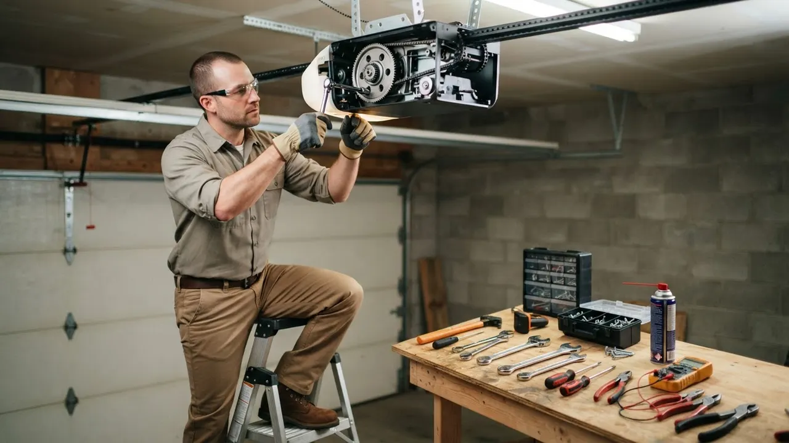

Garage Door Motor Replacement
Garage Door Motor Replacement Wilmington DE Done Same Day
When your opener groans, hums without lifting, or quits mid-cycle, Garage Door Motor Replacement Wilmington DE gets your door moving again the same day. We stock LiftMaster, Chamberlain and Genie units on the truck, test the travel limits and safety reverse before we leave, and back the work with a 1-year warranty. Serving New Castle County since 2010.
Service overview
What Garage Door Motor Replacement Wilmington DE Involves
Garage Door Motor Replacement Wilmington DE is the removal of a failed opener motor and the installation of a new one on your existing rail, trolley and mounting hardware. The job covers pulling the old unit down, checking the drive gear and sprocket for wear, matching the new motor's horsepower to your door's weight, and resetting the up and down travel limits so the door stops flush at the floor. Most residential swaps run two to four hours.
Motors fail here for predictable reasons. A door that has been dragging on a bent track forces the motor to work harder every cycle until the windings overheat. A snapped cable or broken torsion spring leaves the full door weight on the opener, and that load burns out the motor in a matter of days. If your motor has already burned out, call us before you keep pressing the remote, because every extra cycle pushes the gear and sprocket closer to stripping too.

Practical benefits
Why Wilmington Homeowners Replace the Motor
A new motor restores smooth, quiet operation and stops the chain of damage a dying opener causes to springs, cables and tracks. Here is what you actually get when we swap the unit.
Same-Day Door Operation
We carry LiftMaster and Chamberlain motors on every truck, so most Wilmington jobs are finished in a single visit. You call in the morning, we test the door, match the horsepower to your door weight, and you are running on a new motor before dinner. No waiting a week for a special order.
Matched Horsepower, Not Guessed
A 7-foot single door and a 16-foot double door need different motors. We weigh the door, check the torsion springs, and size the opener to the load. Undersized motors burn out early; oversized ones slam the door. Getting this right the first time is why our replacements last.
Quiet Belt and Chain Options
If your garage sits under a bedroom, a belt-drive motor cuts the noise dramatically compared to an old chain unit. We install belt, chain and screw-drive openers and can add nylon rollers at the same time to kill the rattle from worn steel rollers and loose hinges.
Safety Reverse Tested On Site
Every replacement ends with a full safety check. We verify the photo-eye sensors, test the mechanical reverse against a 2x4 laid flat, and confirm the motor meets UL 325. If the door does not reverse on contact, we adjust it before we pack up. That test protects kids and pets.
How service works
How Our Motor Replacement Process Works
From the first phone call to the final safety test, here is exactly what happens when we replace your opener motor in Wilmington.
STEP 01
Phone Diagnosis
You describe the symptom: humming without movement, a grinding noise, the door reversing on its own, or nothing at all. We ask the door size, opener brand and age, then quote a range over the phone. Most calls are booked for the same day or the next morning.
Tools and methods
Tools and Methods We Use
Socket Wrench Set and Power Drill
Used to unbolt the old motor from the ceiling brackets and secure the new unit. We use a power drill for the lag bolts into the header and joists, and a socket set for the rail and bracket hardware.
C-Clamps and Vise Grips
We clamp the rail and door in place before removing the motor so nothing drops when the unit comes free. This is a safety step that protects both the tech and your door.
Tape Measure and Level
The rail has to be level and the motor centered over the door for smooth travel. We measure and level every install so the chain or belt runs straight and does not bind.
Winding Bars
If a torsion spring needs attention during the motor job, we use proper winding bars to release and reset tension safely. Never a screwdriver, never a makeshift tool.
Rubber Mallet and Screwdriver Set
Used to seat the rail, adjust the trolley and open the motor housing for gear inspection. The rubber mallet lets us tap parts into place without denting the rail or housing.
Safety Glasses and Gloves
Standard on every job. Springs, cables and metal edges under tension are dangerous, and we do not work without eye and hand protection.
UL 325 Safety Compliance
Every opener we install is tested to UL 325, the safety standard for automatic door operators. That means the photo-eye sensors and the mechanical reverse are both verified before we leave. If the door does not reverse on contact, we adjust it until it does.
ANSI/DASMA 102 Alignment
We follow ANSI/DASMA 102 for door and opener installation, which covers mounting height, rail alignment and clearances. Following the standard keeps the install within code and protects your manufacturer warranty.
NEC Electrical Code Wiring
The opener is wired to NEC electrical code, with proper grounding and a dedicated circuit where needed. We do not cut corners on the electrical side, because a bad connection can fry a new motor or trip a breaker.
Door Balance and Load Check
Before we install a new motor, we disconnect the opener and lift the door by hand. If it does not stay put at mid-height, the springs are out of balance. We correct that first so the new motor is not overloaded.
Force and Travel Calibration
We set the open and close force to the minimum needed to move the door, then set the travel limits so the door stops flush at the floor. This reduces wear on the motor and the door hardware.

Where this service fits
When Wilmington Homeowners Replace a Motor
A homeowner in Forty Acres has a 15-year-old Craftsman opener that runs slow and reverses on cold mornings.
We test the motor draw and find the windings are failing. We replace the unit with a belt-drive LiftMaster sized to the door, set the travel limits and reprogram the remotes. The door opens smoothly on the coldest mornings and the noise level drops noticeably. The homeowner avoids a mid-winter breakdown.
A landlord near the Riverfront has a tenant whose garage door motor burned out after a cable snapped.
We replace the snapped galvanized steel cable, rebalance the door, then install a new Chamberlain motor. We reprogram the tenant's remote and the keypad in the same visit. The tenant has working garage access the same day, and the landlord avoids a second service call for the remotes.
A business on the East Side has a commercial opener that has started grinding and stopping mid-cycle on the loading dock.
We inspect the gear and sprocket, find heavy wear from high-cycle use, and replace the motor with a commercial-rated unit. We set the limits and test the safety reverse. The loading dock is back in service the same day, and the new motor is rated for the daily traffic the old one could not handle.
A homeowner in Wawaset Park has an original 1990s opener that no longer responds to the remote and hums when pressed.
We confirm the motor is dead and the rail is still straight. We install a new Genie unit on the existing rail, program new remotes and a keypad, and run the safety test. The door works with modern remotes and a keypad, and the homeowner keeps the original rail instead of paying for a full opener and rail replacement.
Local execution
How Motor Replacement Runs in Wilmington
Wilmington's housing stock ranges from century-old rowhouses in Little Italy and Trinity Vicinity to newer builds along the Riverfront, and each one presents different opener challenges. Older homes often have low-clearance garages where a standard rail will not fit, so we use a low-profile or wall-mount opener. Newer homes tend to have taller doors that need a higher-horsepower motor. Our winters bring repeated freeze-thaw cycles, and a door that freezes to the floor in January puts extra strain on the opener every morning. We see a spike in burned-out motors from December through March. If you are searching for same day garage door motor replacement Wilmington DE, call before the cold sets in. We also work to Delaware contractor license and NEC code requirements on every install, and we pull the right permits when a job needs them.
Forty Acres
Many homes here have original 1980s and 1990s openers that are now failing. We replace them with modern belt-drive units that fit the existing rail in most cases.
Riverfront
Newer construction with taller, heavier doors. These need a correctly sized motor, often 3/4 horsepower or higher, to lift the door without straining.
Wawaset Park
Historic homes with low-clearance garages. We fit low-profile or wall-mount openers where a standard rail will not clear the door.
Little Italy
Rowhouse garages with tight side clearances. We measure carefully and use compact mounting hardware so the opener fits without hitting the walls.
Southbridge
A mix of older and newer homes. We see a lot of cable and spring wear here alongside motor failures, so we check the whole door during the visit.
Freeze-thaw winters that freeze doors to the floor
A frozen door seal makes the opener strain on the first cycle of the morning. Over a winter, that repeated strain shortens motor life. We check the bottom seal and recommend replacement if it is holding water.
Salt air near the Riverfront and the Christina River
Salt accelerates rust on hinges, rollers and the opener rail. Rusty rollers drag and force the motor to work harder. We lubricate and replace rusted parts during the motor job.
Older rowhouse garages with low ceilings
Standard rail-mounted openers do not always fit. We use low-profile or wall-mount units so the door clears and the motor is properly supported.
Summer heat and humidity in uninsulated garages
Heat stresses opener motors and can shorten the life of the logic board. We check ventilation and recommend an insulated door or a higher-rated motor where heat is a recurring issue.
Problems we solve
Motor Problems We Fix in Wilmington
Most opener failures we see in Wilmington trace back to one of a few causes. Here are the common ones and what happens if you let them go.
Opener hums but the door will not move
We test the motor and gear assembly on site. If the motor is dead, we replace it and check the drive gear and sprocket at the same time. If only the gear is stripped, we may be able to replace just that and save you the cost of a full motor. This usually means a stripped gear or a burned-out motor winding. Keep pressing the remote and you risk damaging the sprocket and the logic board, turning a motor swap into a full opener replacement.
Motor burned out after a broken spring
We replace the broken spring first, then install the new motor and rebalance the door. This way the replacement motor runs under its rated load instead of fighting the door weight. A broken torsion spring leaves the full weight of the door on the opener. The motor overheats trying to lift a door it was never meant to carry, and it fails within days.
Door reverses or stops mid-cycle
We check the photo-eye sensors, the track alignment and the motor draw. If the motor is failing, we replace it and realign the sensors and track so the door runs clean through a full cycle. Often a misaligned sensor or a binding track, but a failing motor can also cause it. Left alone, the door may close on a car or a pet, and the motor keeps overheating on every cycle.
Grinding noise from the opener head
We open the housing, inspect the gear and sprocket, and replace the worn parts. If the motor is also weak, we replace the whole unit. Either way, you get a quiet-running opener again. Grinding usually means worn gears or a dry, failing sprocket. Ignore it and the gear strips completely, which can lock the door in place and leave you unable to open it manually.


A practical standard for every visit.
Clear planningPrepared arrivalsCareful workLocal follow-through
Experience in the details
16 Years Replacing Motors in Delaware
Delaware Express Garage Door Service has been installing and repairing garage door openers in Wilmington since 2010. Our techs are trained on LiftMaster, Chamberlain, Genie, Craftsman, Linear, Marantec and Sommer systems, and we work to UL 325 and ANSI/DASMA 102 standards on every job. We have swapped motors in century-old carriage houses in Wawaset Park and in new builds off the Riverfront, and we know how Wilmington's freeze-thaw winters stress opener hardware. Our trucks carry the motors, springs and cables needed to finish most jobs in one visit.

Where we work
One local team. A lot of ground covered.
Downtown WilmingtonRiverfrontThe HighlandsTrolley SquareForty AcresBaynard VillageWawaset ParkCool SpringTrinity VicinityBrowntownLittle ItalyUnion Park Gardens
Check my address Notes from local customers
What Wilmington Customers Say
My opener started humming without lifting the door. Delaware Express came out the same afternoon, found the motor was shot and a roller was dragging. They replaced the motor with a belt-drive LiftMaster and swapped the rollers. The door is quieter than it has ever been. Fair price, clean work, no upsell.
Our garage door motor burned out during the January cold snap and the door was stuck open. They came out on a Sunday, replaced the motor and checked the springs while they were there. Took about three hours total. I appreciated that they explained why the old motor failed instead of just selling me a new one.
I manage several rental units near the Riverfront and use Delaware Express for all the garage doors. They replaced a Chamberlain motor in one of the units and reprogrammed all the tenant remotes and the keypad in the same visit. Reliable scheduling and they always send a clear invoice.
Most residential motor replacements in Wilmington run $350 to $650 installed, including the new unit, labor and disposal of the old motor. Belt-drive and smart openers sit at the higher end; basic chain-drive units sit lower. Add $80 to $150 if the rail, sprocket or a frayed cable also needs replacement. We quote the full price before we start.
A quality opener motor lasts 10 to 15 years under normal use, or roughly 10,000 to 15,000 cycles. Wilmington's freeze-thaw winters and the salt air near the Riverfront shorten that. If your motor is past 12 years and the door has started reversing or running slow, replacement is usually cheaper than repeated repairs.
Delaware Express Garage Door Service replaces opener motors across Wilmington and New Castle County, including Downtown, Trolley Square, Forty Acres, the Highlands and Southbridge. We stock LiftMaster, Chamberlain and Genie units on the truck and can complete most replacements the same day you call. Reach us at (302) 556-5080.
On most modern openers, yes. The motor, gear and sprocket come as a unit, and we can swap that assembly onto your existing rail and housing if the rail is straight and the logic board is healthy. On older or discontinued models, a full opener replacement is often cheaper than sourcing a motor that is no longer made.
Keep exploring
Related Services
Your next step is waiting
Get Your Garage Door Motor Replacement Wilmington DE Today
A dead opener leaves your car trapped and your home exposed. Call Delaware Express Garage Door Service at (302) 556-5080 for same-day Garage Door Motor Replacement Wilmington DE, backed by a 1-year workmanship warranty. We serve all of Wilmington and New Castle County, 24/7 for emergencies.
Start with the basics
Call For Garage Door Service
Call (302) 556-5080 and tell us what your door is doing. We answer during business hours and run emergency calls after hours. Most days we can get a tech to you the same day, and we will give you a window, not a maybe.